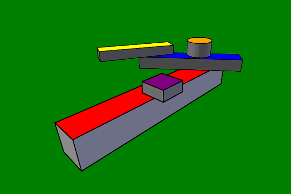
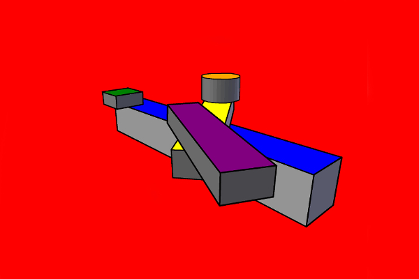
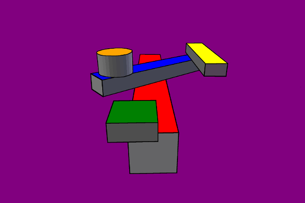
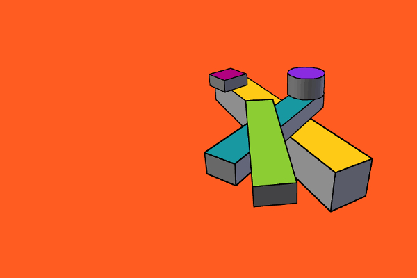
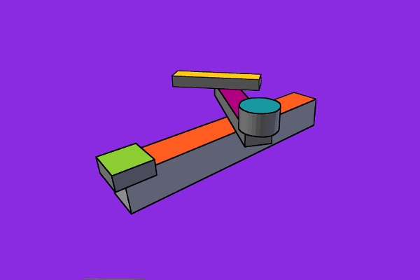
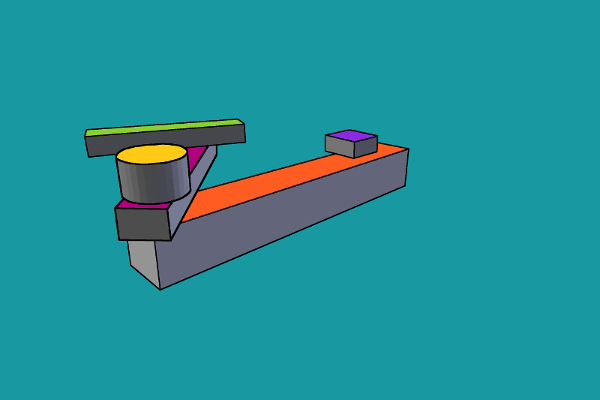
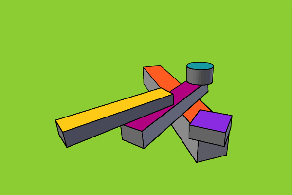
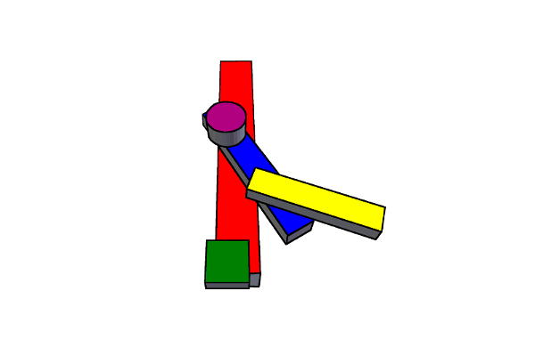

UNFINISHED IDEA OF A SCULPTURE I HAVE BEEN WORKING ON, THAT REPRESENTS A GALLERY + OFFICE/STUDIO MIXED-USE RESIDENTIAL AND BUILDING CONCEPT. IT IS A NEW AMERICAN DREAM OF TRANSFORMABLE AND MOVABLE ARCHITECTURE. A TRUE MULTI-DIMENSIONAL SPACE WITH WHAT SEEMS TO BE AN INFINITE NUMBER OF LIVABLE SITUATIONS AND POSSIBILITIES. THIS EXHIBITION IS AN ATTEMPT TO CONSTRUCT THE EVOLUTION OF EXPRESSION, THROUGH THE USE OF MANY DIFFERENT CONFIGURATIONS AND COLORS.
THE THOUGHT OF VIEWING ARCHITECTURE AS SCULPTURE OR SCULPTURE AS ARCHITECTURE IS SOMETHING I'VE IMAGINED FOR SOME TIME. I HOPE THAT YOU ENJOY THE SHOW. TO EXPLORE JUST CLICK ON THE TITLE OF YOUR FAVORITE IMAGE FOR MORE FEATURES AND VISUALS.

NEW AMERICAN DREAMS No.1
I WANTED TO KEEP THINGS AS SIMPLE AS POSSIBLE, FOR SUCH A COMPLEX SHAPE. IT IS A COLORFUL SHOWING. THE FIRST SET OF IMAGES 01-06 IS CREATED USING THE STANDARD RYB SCHEME WITH BOTH PRIMARY AND SECONDARY COLORS. THESE ARE MY FAVORITES, AS THEY ARE DARKER IN CONTRAST AND MORE SOLID-LOOKING TO FORM.

NEW AMERICAN DREAMS No.2
THE 3D SHAPES CAN BE POSITIONED, IN ANY NUMBER OF WAYS BY SIMPLY JUST ROTATING THE IMAGE, GIVING IT A WHOLE DIFFERENT PERSPECTIVE. ADDITIONAL SAMPLES ARE OFFERED UNDER, MORE VIEWS TO THE LEFT AND BELOW THE MAIN VISUAL.

NEW AMERICAN DREAMS No.3
I AM STILL LEARNING THE DIVERSE ASPECTS OF ITS MOVEMENT. TRYING TO FIND THE AUTHENTIC ANGLES AND THE EVOLUTION OF REFLECTION. IT WILL TAKE MORE TIME TO STUDY AND COMPREHEND ITS REPRESENTATION. IT IS ALSO DIFFICULT TO CONCENTRATE ON JUST ONE FIXED AREA.

NEW AMERICAN DREAMS No.4
THE MATHEMATICS OF ITS FORCES HAVE BOTH AN EQUAL AND OPPOSITE REACTION OR ACTION. ITS PARTS ARE WORKING IN CONJUNCTION WITH THE WHOLE, ALMOST MAKING A NEW KIND OF SHAPE ALTOGETHER. A MORE ADVANCED ARCHITECTURE.
NEW AMERICAN DREAMS No.5
THESE SHAPES, WHEN PUT TOGETHER HAVE AN INTERESTING CONNECTION BETWEEN THE EXTERNAL AND INTERNAL RELATIONSHIP OF DESIGN. ITS UNIQUENESS CREATES AN ENTIRELY UNCULTURED RANGE OF MOTION. SQUARE WINDS THAT FLOW IN A CIRCULAR PATTERN.
NEW AMERICAN DREAMS No.6
THE COUNTLESS, TYPES OF ZONES ARE RADICAL. CONFIGURATIONS OF THE BODIES SPIN TOGETHER, FORGING INDIVIDUAL STYLES. ITS LINES ARE STRAIGHT, AS THE CONTOUR FIGHTS FOR SYMMETRY WITHIN THE FIGURE AT EVERY TURN.
NEW AMERICAN DREAMS No.7
THE REMAINING IMAGES, NUMBERS 07-12 ARE MADE WITH INTERMEDIATE OR TERTIARY COLORS. THE IN-BETWEEN, MUTED, AND SOFTER SPECTRUM OF LIGHT. THEY ARE MORE ORGANIC AND EARTHLY. THE POSTER TAKES ON AN ENTIRELY ALTERED COMPARISON FROM THE OTHERS.

NEW AMERICAN DREAMS No.8
NOTICE THE ILLUSION OF SPACE WITH COLOR AS IT BENDS FROM ONE PHASE TO THE NEXT. THE ENDLESS VARIATIONS SOMEHOW FEEL SYNCHRONIZED WITH NATURE, AS IF THEY WERE MEANT TO MOVE. CONSTANTLY, BEING UPDATED AND SHIFTING TO MEET THE EVER-CHANGING DEMANDS OF SOCIETY.
NEW AMERICAN DREAMS No.9
AFTER EXPERIMENTING, I CAN ONLY WONDER ABOUT THE KINDS OF IDEAS THAT MIGHT BE THOUGHT, IN SUCH A SPACE. I DON'T BELIEVE THE CONCEPT IS TRULY ORIGINAL, MORE A COMPLETION OF THINKING BY ITS PREDECESSORS. IT HAS BEEN AND CONTINUES TO BE DONE, WITH DIFFERENT STRUCTURES. THE ORIGINALITY BECOMES THE SPACE ITSELF AND ITS ABILITY TO PROVIDE MANY VERSIONS FOR CREATION.

NEW AMERICAN DREAMS No.10
THE NUMBER OF STANCES AND LEVELS IS DIFFICULT TO COUNT. I FIND THE POINTS WHERE THE OBJECTS MEET TO BE THE MOST INTERESTING. THERE IS FLUIDITY IN ITS STRUCTURE. THE MORE CORNERS YOU FIND, THE MORE CAPTIVATING THINGS BECOME.

NEW AMERICAN DREAMS No.11
GETTING THE OBJECTS TO MOVE IN A BALANCED FASHION SEEMS TO BE THE BIGGEST OBSTACLE. CURRENTLY, THERE IS A FIXED-MODERNIST VIEWPOINT OF HOW ONE NEEDS TO LIVE. THIS CONCEPT GIVES A HOMEOWNER NOT ONLY ONE RESIDENCE BUT MANY IN ONE PLACE.

NEW AMERICAN DREAMS No.12
EXPERIMENTING IN A VIRTUAL HOUSING CONSTRUCTION ENVIRONMENT IS INNOVATIVE AND ENTERTAINING. GOING THROUGH THE MOTIONS AND LEARNING FROM A MODEL ONLY LEADS TO A BETTER OUTCOME. THERE IS A WHOLE NEW USE OF TERRITORY AND VISION OF PROPERTY, YET TO BE DISCOVERED.

NEW AMERICAN DREAMS No.13
THE 13TH IMAGE USES A WHITE BACKGROUND. IT LEAVES ME WITH A FEELING OF BEING MULTI-NURTURED IN SOME WAY. THE COMPLEXITY BRINGS ABOUT NEW FORMS OF DOMESTICATION IN LIVABLE SPACES AND HUMAN INTERACTIONS. THE NOURISHING PROCESS, OF CARING FOR AND ENCOURAGING THE GROWTH OR DEVELOPMENT OF SOMEONE OR SOMETHING FROM AN UNKNOWN SOURCE.
.png)
CLOSING STATEMENT
THE MOST IMPORTANT THOUGHT I HOPED TO GET ACROSS WITH THE EXHIBITION WAS THE IDEA OF VIEWING ARCHITECTURE AS SCULPTURE OR SCULPTURE AS ARCHITECTURE, RATHER THAN THINKING OF EACH AS A JOB DESCRIPTION. IT WAS A RELIEF TO DISCOVER THESE DISCIPLINES' SIMILARITIES AFTER EXPOSING THE DIFFERENCES BETWEEN THEM FOR SO MANY YEARS, A FULL-CIRCLE KIND OF PROCESS.
THE LOGO IS AN EXPERIMENTATION IN ANIMATING A LOGO, AS WELL AS CREATING AN INTERDIMENSIONAL SPACE OR 4TH DIMENSION WITHIN AN IDENTITY. IT IS ALSO, A SHAPE THAT I HAVE USED MANY TIMES THROUGHOUT MY WORK AS THE ROOFTOPS OF 3-DIMENSIONAL BUILDINGS. PAIRING THE TWO WORDS TOGETHER AS IF EACH WERE FIGHTING FOR ITS, OWN GREATNESS JUST MADE SENSE. ALLOWING THEM, TO BOTH TAKE ON A WIN-WIN APPROACH WITH SPACE TO PRODUCE A GREATER RESULT AND OUTCOME MADE, EVEN MORE, SENSE.
CHOOSING THE MEDIUM OF POSTERS TO PRESENT THE SHAPE CAN BE TRACED BACK TO SOME OF MY EARLIEST CHILDHOOD MEMORIES, IT WAS THE FIRST KIND OF ARTWORK I BOUGHT AND HUNG ON THE WALL. THEY ARE ALSO INEXPENSIVE AND AFFORDABLE FOR THE CUSTOMER. I FIND IT INTERESTING THAT WITH THIS SHAPE, EACH PIECE CAN BE TURNED AND HUNG, TO MAKE ANOTHER VISUAL ENTIRELY. THIS DEVELOPMENT CONTINUES TO BE, A THEME, THAT IS ALSO CONVEYED THROUGHOUT MY WORK WITH SHAPES. IN THAT, THE ART IS ABLE, TO WORK ON A MULTI-PERSPECTIVE LEVEL FOR THE VIEWER. EACH PERSON FINDS THEIR OWN HIDDEN, OR UNDISCOVERED IMAGE THAT MOST DO NOT SEE RIGHT AWAY CREATING MORE VALUE.
AFTER STRUGGLING FOR MANY MONTHS, I STILL BELIEVE THAT THE IDEA IS NOT, TRULY, ORIGINAL. THE SHAPE IS FOR ME MORE A GATHERING OF THOUGHTS FROM ALL THE OTHERS I HAVE BEEN EXPOSED TO, UP UNTIL THIS TIME. THE OBSERVER IS ABLE, TO SEE MY INTERPRETATIONS AND EXPRESSIONS OF A NEW AMERICAN DREAM IF I WERE THE ONE TO BUILD IT. THE IDEA THAT ONE RESIDENCE CAN BECOME MANY IS THE SOLUTION TO THE PROBLEM OF MODERNITY OF ALWAYS WANTING MORE. I CAN NOW TRAVEL, WITHIN THE SPACE ITSELF AND REDEFINE THE TRENDS TO MEET MY NEEDS.
THE MUTATIONS OF THE ARTWORK, FROM THE ORIGINAL CONCEPT TO THE NEXT, THIS INTERCONNECTIVITY PRODUCES STRONGER THOUGHTS. TRYING TO COMPREHEND AND UNDERSTAND HOW TO EXPLAIN THE SPACE BECOMES THE EXISTENCE. A HYPERCUBE BOX, WITHIN AN OUTER BOX, WITHIN A LARGER BOX, WITHIN EVEN ANOTHER SHAPE, AND SO ON. TO THEN, HAVE THE ABILITY, TO RECONFIGURE, THE SPACES IN A COMPLETELY DIFFERENT, WAY THAT PRODUCE CREATIVE BOUNDARIES, ONE THAT IS MORE FLEXIBLE AND FLUID, FOR GROWTH. I AM IDENTIFYING IT AS A TRANSIENT SHAPE. A BENT SPACE WITH NURTURING CENTER POINTS OF REMINDERS. A PLACE WHERE BODIES MEET TO DISCUSS FINDING AN EQUAL, CENTER FOR THE POSSIBILITY TO IMAGINE AN INFINITE NUMBER OF EDGES. THE CLOSEST THING TO A VIRTUAL UTOPIA I CAN FIND. OVER TIME AND THROUGH EXPERIENCE WILL I ONLY BE ABLE TO UNDERSTAND THE INTRICACIES OF ITS DETAIL. IMAGINING ONE DAY AN OPPORTUNITY TO DEVELOP EVEN MORE WISDOM BY ACTUALLY LIVING IN IT COULD MAKE EXHIBITING, WORKING, CREATING, AND BEING DOMESTICATED A CONTINUOUSLY FUN AND ENTERTAINING REALITY.
FOR YOU TO PUT THE PIECES TOGETHER, I CONTINUE TO DEVELOP IDEAS AROUND THE CONCEPT, AND MORE OF THE PROGRESSION CAN BE SEEN BY CLICKING ON THE SPECIAL SECTION ABOVE.